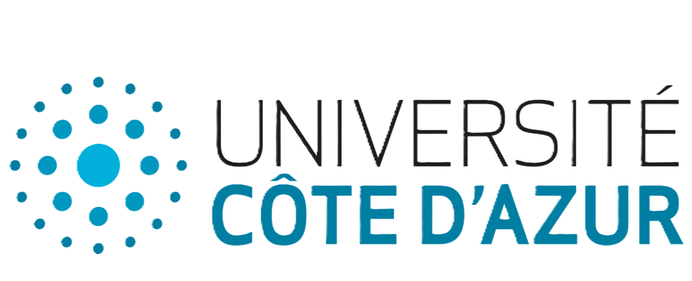
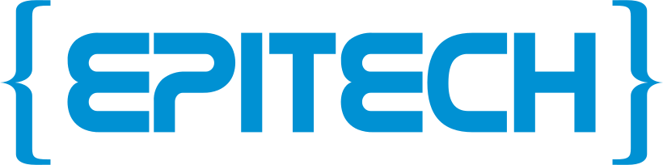

Mon parcours détaillé
Licence Mathématiques & Applications
Mes trois premières années universitaires se sont déroulées à l'Université des Lagunes d'Abidjan. J'y ai acquis une formation solide en mathématiques fondamentales : algèbre linéaire, analyse réelle et complexe, probabilités, statistiques et introduction à la modélisation.
Matières clés : Algèbre, Analyse, Probabilités, Statistiques, Informatique fondamentale
Partenariat Université des Lagunes & Université Côte d'Azur
Après l'obtention de ma licence, j'ai eu l'opportunité de poursuivre mes études en France grâce à un partenariat entre l'Université des Lagunes et l'Université Côte d'Azur. Cette mobilité internationale a été un tournant décisif dans mon parcours académique.

Master en Ingénierie Mathématique
À Nice, j'ai approfondi mes compétences en modélisation mathématique, optimisation et machine learning. Le Master m'a permis de travailler sur des projets concrets alliant théorie mathématique et applications en data science.
Spécialités : Machine Learning, Optimisation, Modélisation, Data Science, Statistiques avancées

MSc IA & Big Data en alternance
J’ai commencé par la "Piscine Epitech", une immersion intensive de 4 mois en développement web, DevOps et administration système. Grâce à la pédagogie par projet, j’ai développé rapidement mes compétences à travers des réalisations individuelles et collaboratives. J’ai ensuite poursuivi en alternance, où j’ai approfondi mes connaissances en Big Data et en intelligence artificielle dans un environnement professionnel.
Format : Alternance (4 semaines entreprise / 2 semaines école)
Pourquoi ce site ?
Durant mon parcours, j'ai souvent cherché des ressources, des cours bien structurés, des corrections d'examens... Aujourd'hui, je souhaite faciliter ce processus pour les étudiants qui suivent un chemin similaire au mien. Ce site regroupe donc tous mes cours, TD, TP, sujets d'examens et corrections depuis la L1 jusqu'au Master, ainsi que des recommandations de sites et ressources qui m'ont aidé à progresser.
Explorez mon parcours
Découvrez mes cours, projets et ressources d'apprentissage